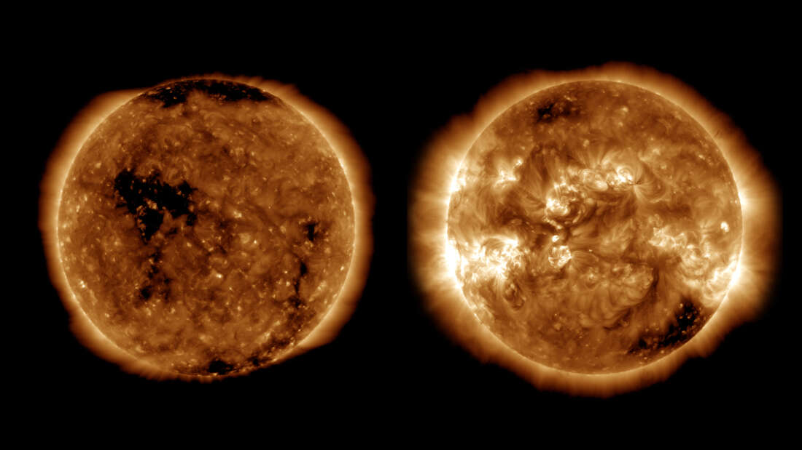

Inicio
Quem Somos
Galeria
Contato
Astronautas na ISS Irão Receber Um Novo Banheiro
POR: CÉU A VISTA
Astrônomos Usam O VLBA E Fazem A Primeira Medida Direta de Distância Até Uma Magnetar
POR: CÉU A VISTA

O Sol Oficialmente Entrou Em Um Novo Ciclo de Atividade – Bem-Vindos Ao Ciclo 25
POR: CÉU A VISTA
Rússia Revela Imagens De Um Rebocador Espacial Nuclear
POR: CÉU A VISTA
O Véu de Cygnus – Surfando Na Borda Da Onda de Choque De Uma Supernova
POR: CÉU A VISTA
NGC 2442 – A Galáxia Em Forma de Gancho
POR: CÉU A VISTA
Superfície Congelada do Satélite de Europa Sofre Uma Grande Deriva Polar
POR: CÉU A VISTA
Astrônomos Descobrem Um Raro Netuno Quente Orbitando Uma Estrela Próxima
POR: CÉU A VISTA
Pela Primeira Vez Algoritmo de Machine Learning Confirma A Existência de 50 Novos Exoplanetas
POR: CÉU A VISTA